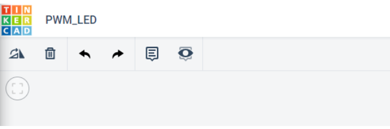

Introduction
This lab will introduce you to Pulse Width Modulation (PWM) using the Arduino.
The primary tool for this project will be TinkerCad -> https://www.tinkercad.com
Pulse-width modulation (PWM): method of chopping up an electrical signal to discrete parts to reduce the average power delivered by it. By turning the switch between the supply and load (the electrical component using active power, e.g., a light) on and off at a fast rate, we can control the average voltage (and current) fed to the load. The total power supplied to the load is higher the longer the switch is on compared to off. The PWM switching frequency (rate of on/off switching of the power supply) has to be high enough not to affect the load, in other words the resultant waveform perceived by the load must be as smooth as possible. PMW is used in solar panels, digital controls, communication systems, running certain motors, etc. PWM has a main advantage in that power loss in the switching devices is very low. Many modern microcontrollers integrate PWM controllers exposed to external pins as peripheral devices controlled by means of internal programming interfaces. These are commonly used for direct current (DC) motor controls (e.g., in robotics).
Duty Cycle: The term is used to describe the proportion of 'on' time to the regular interval ('period' of time). The duty cycle is expressed in percentage: 100%: Fully on. High power. 50%: “Square” wave. Half the time the power is on, and the other half it is off. 25%: The power is on 25% of the time, and off 75% of the time. Low power.
In this section you will control the brightness of an LED using PWM pins on the Arudino Uno by using the analogWrite() function and view the voltage and PWM value in the serial monitor using the Serial.print() and Serial.println() functions.
Setting up the Circuit
Once loaded login to TinkerCad and then click on Circuits > Create new Circuit.
Change the circuit name, located top-left hand side of the screen to PWM_ LED, see image below.

Next you need to add an Arduino Uno and a breadboard that need to be connected together from the 5V and GND pins of the Arduino to the power and ground rails of the breadboard.
This can be achieved by either selecting the Arduino Uno and the breadboard from Components > Basic components or by changing Components > Basic to Components > Starter and choosing Arduino Uno and the Breadboard starter. Please refer to image below.

If you have chosen the Arduino and breadboard template from the the Components > Starter then these two components are already connected with a corresponding red 5V line and GND line.
- 1 x LED, any colour
- 1 x Potentiometer, set at \(10k\Omega\) or \(10000\Omega\)
- 1 x resistor, set at \(0.22k\Omega\) or \(220\Omega\)
Placing components (refer to the image below the steps):
- Place the LED so that the cathode and anode is in row 18 and 19 column e respectively.
- Place the resistor's terminal 2 in row18 columnb and terminal 1 in the GND rail
- connect a wire from row 19 column d to the PWM pin \textasciitilde6 in the Arduino Uno
- Place the potentiometer so that Terminal 1, Wiper and Terminal 2 are in row26,27 and28 column e respectively.
- Wire up the potentiometer so that terminal 1 and 2 are in GND and 5V line of the breadboard. then take the Wiper to A0 of Arduino Uno.
Note the wires are placed in row 26, 28 and 27 column d respectively.

Programming the Circuit
void setup()
{
}
void loop()
{
}
Now you are ready to set up all the Sketch up as follows:
int ledPin = 6; // LED connected to digital pin 6
int analogPin = A0; // potentiometer connected to analog pin A0
int val = 0; // variable to store the read value
void setup() {
pinMode(ledPin, OUTPUT); // sets the pin as output
}
void loop() {
val = analogRead(analogPin); // read the input pin
analogWrite(ledPin, val / 4);
}
TODO
Can lines 1 to 3 be refactored so that the variables are declared and initialised on 1 line? Refactor the code to test your answer.
Looking inside the
void setup()only theledPinhas had its mode changed toOUTPUT. Do we need to need to specify thepinModefor the variableanalogPin? Test your theory by adapting the code.What is the purpose of the mathematical operation in line 11? Recall what
analogReadreturns and howanalogWriteoperates. Add comment to the the line 11 to briefly describe the code.Describe the relationship between the LED and the resistor based on your observation of your circuit.
Further Programming
In order to see what is happening numerically with the circuit you will need to send the data to the serial monitor:
- Create a new variable called
PWMas an interger data type - Adjust the code so that
void setup()includes the commandSerial.begin(9600); - Make a new line after the
val = analogReadinvoid loop()and writePWM = val \ 4; - Next replace
analogWrite(ledPin, val \ 4);withanalogWrite(ledPin, PWM); - Then finally, modify the code inside the
void loop()to produce an output similar to below with a delay of 500ms.

Now that you have the PWM outputting to the Serial monitor.
QUESTIONS:
- What is the voltage when PWM is 0, 51, 102, 153, 204 and 255? Use the the calculation:
\[ V = \frac{PWM}{51}\]
- Use a multimeter to measure the voltage out of the pin ~ when the PWM is 51, 102, 153, 204 and 255, why is the multimeter value different to your calculations?
Now adjust the code to output the calculated voltage to the Serial Monitor:
- Add
float voltage = 0;to your list of variables at the top of the sketch. - After the
PWM = val /4;addvoltage = PWM / 51.0;to a new line - Output the voltage to the Serial monitor.